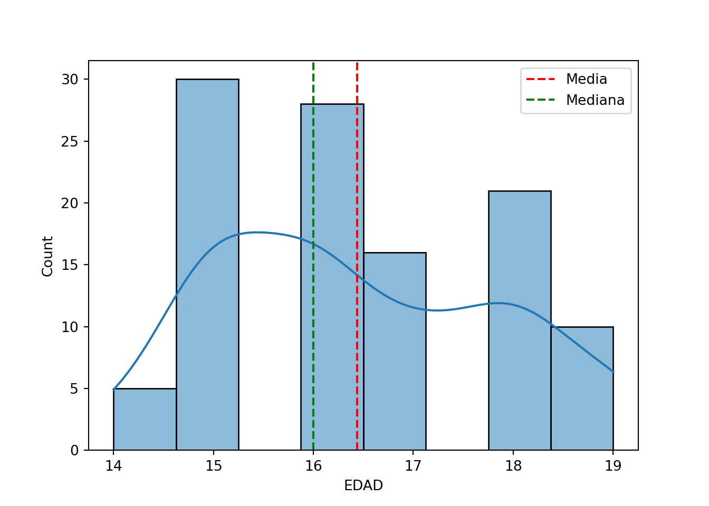
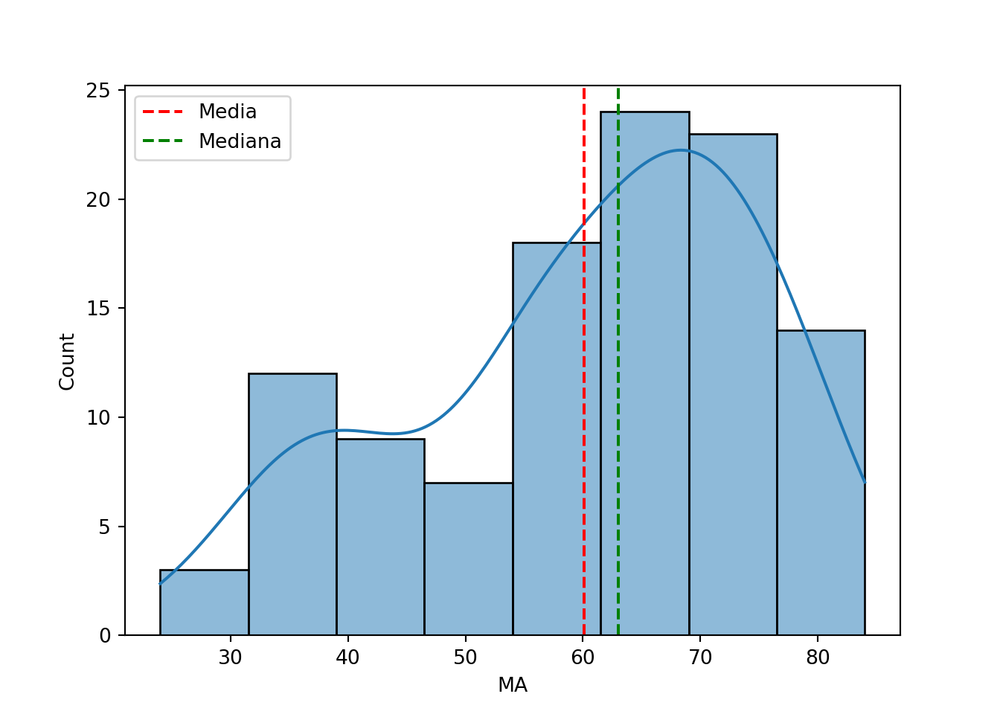
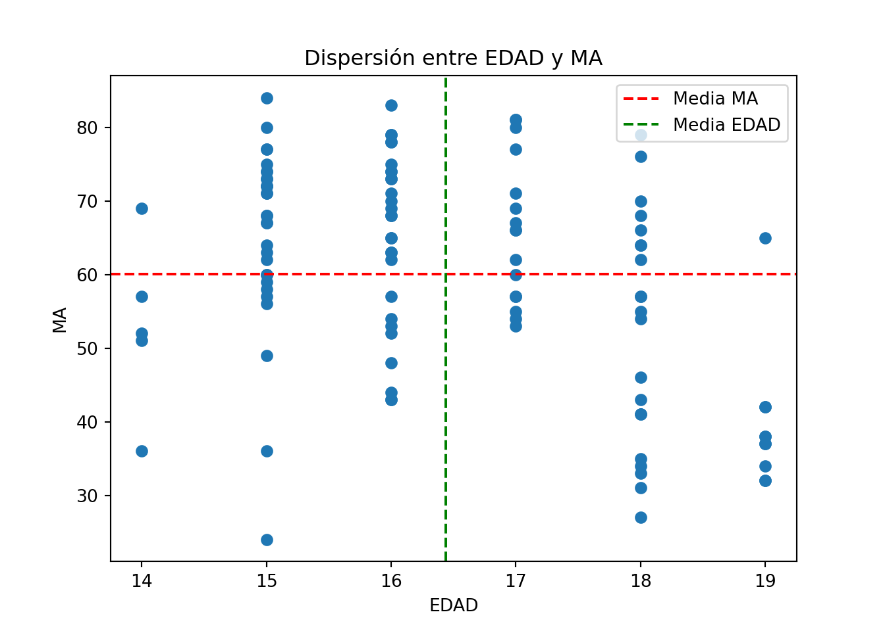
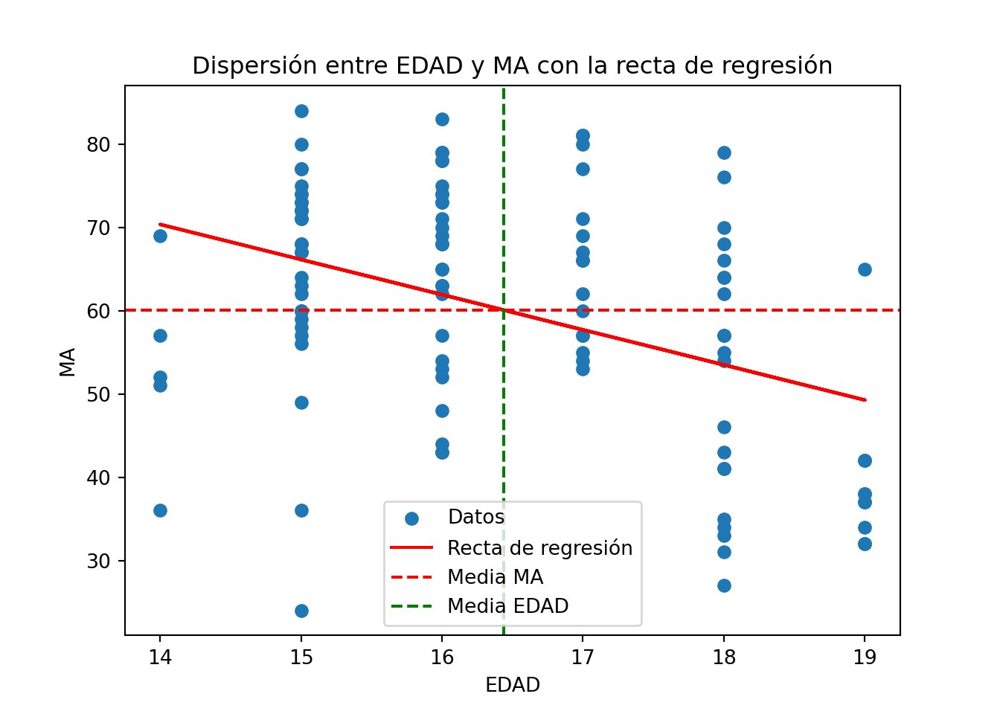

# Cargar las librerías necesarias
library(reticulate)
#py_config()
#py_install(c("numpy", "pandas", "scipy", "seaborn"), envname = "r-reticulate")Reto_2
Análisis Exploratorio de Datos - Icfes
Descripción General
Los estudiantes de la facultad de Ciencias de la UTB presentan el examen Saber Pro - Icfes, del cual se tomó una muestra aleatoria de 110 registros. Las variables consideradas son las siguientes: - EDAD: Edad de los estudiantes en años. - LC: Puntuaciones en el área de lectura crítica. - MA: Puntuaciones en matemáticas. - CN: Puntuaciones en ciencias naturales. - SO: Puntuaciones en sociales. - IN: Puntuaciones en inglés.
Datos
Descargar los datos en el archivo Icfes.csv.
Cargar los datos
import numpy as np
import pandas as pd
import scipy as sp
import seaborn as sns
import matplotlib.pyplot as pltAhora cargamos los datos usando pandas:
# Cargar los datos
df = pd.read_csv("../assets/data/Reto_2/Icfes.csv", sep=";")
df.head() EDAD LC MA CN SO IN
0 18 59 46 42 42 45
1 18 63 64 67 55 72
2 18 63 62 59 59 64
3 16 75 65 65 73 72
4 15 67 60 68 65 68Instrucciones del Profesor
El profesor JORGE LUIS VILLALBA ACEVEDO indica a sus estudiantes del curso de Estadística y Probabilidad lo siguiente:
- Seleccionar las variables:
- EDAD = X
- MA = Y
- Calcular los siguientes estadísticos (nota: aplicar redondeo a dos decimales):
Cálculos Solicitados
- Suma de cuadrados para xy (
Sxy)
La suma de cuadrados para xy representa la covarianza entre las variables x e y. Se calcula como la suma de los productos de las diferencias de cada variable respecto a su media.
# Suma de cuadrados para xy
Sxy = np.sum((df["EDAD"] - df["EDAD"].mean()) * (df["MA"] - df["MA"].mean()))
print(f"Sxy: {Sxy:.2f}")Sxy: -923.49- Suma de cuadrados para x (
Sxx)
Asi mismo, la suma de cuadrados de una variable indivual como en este caso, representa la varianza de la variable. Se calcula como la suma de los cuadrados de las diferencias de cada valor respecto a la media.
# Suma de cuadrados para x
Sxx = np.sum((df["EDAD"] - df["EDAD"].mean())**2)
print(f"Sxx: {Sxx:.2f}")Sxx: 219.05- Suma de cuadrados para y (
Syy)
Hacemos lo mismo para y:
# Suma de cuadrados para y
Syy = np.sum((df["MA"] - df["MA"].mean())**2)
print(f"Syy: {Syy:.2f}")Syy: 23831.42- Coeficiente de asimetría para x
Este coeficiente mide la asimetría de la distribución de la variable x. Se calcula como el tercer momento centrado estandarizado.
# Coeficiente de asimetría para x
coef_asimetria_x = (3 * (df["EDAD"].mean() - df["EDAD"].median())) / df["EDAD"].std()
print(f"Coeficiente de asimetría para x: {coef_asimetria_x:.2f}")Coeficiente de asimetría para x: 0.92Podemos representar graficamente este coeficiente:
#Usamos seaborn
sns.histplot(df["EDAD"], kde=True)
plt.axvline(df["EDAD"].mean(), color='r', linestyle='--', label='Media')
plt.axvline(df["EDAD"].median(), color='g', linestyle='--', label='Mediana')
plt.legend()
El resultado de 0.92 indica una asimetría positiva, lo que significa que la cola derecha de la distribución es más larga o más gruesa que la izquierda.
- Coeficiente de asimetría para y
# Coeficiente de asimetría para y
coef_asimetria_y = (3 * (df["MA"].mean() - df["MA"].median())) / df["MA"].std()
print(f"Coeficiente de asimetría para y: {coef_asimetria_y:.2f}")Coeficiente de asimetría para y: -0.59Podemos representar graficamente este coeficiente:
#Usamos seaborn
sns.histplot(df["MA"], kde=True)
plt.axvline(df["MA"].mean(), color='r', linestyle='--', label='Media')
plt.axvline(df["MA"].median(), color='g', linestyle='--', label='Mediana')
plt.legend()
Este coeficiente para la variable y negativo nos indica una asimetría negativa, lo que significa que la cola izquierda de la distribución es más larga o más gruesa que la derecha.
- Curtosis para x
# Curtosis para x
curtosis_x = df["EDAD"].kurtosis()
print(f"Curtosis para x: {curtosis_x:.2f}")Curtosis para x: -1.01- Curtosis para y
# Curtosis para y
curtosis_y = df["MA"].kurtosis()
print(f"Curtosis para y: {curtosis_y:.2f}")Curtosis para y: -0.64La curtosis mide la “altura” de la distribución. Un valor positivo indica una distribución más alta y estrecha, mientras que un valor negativo indica una distribución más baja y ancha. Podemos representar ambas curtosis de la siguiente manera usando seaborn:
#Usamos seaborn
sns.histplot(df["EDAD"], kde=True)
plt.axvline(df["EDAD"].mean(), color='r', linestyle='--', label='Media')
plt.axvline(df["EDAD"].median(), color='g', linestyle='--', label='Mediana')
plt.legend()#Ahora para MA
sns.histplot(df["MA"], kde=True)
plt.axvline(df["MA"].mean(), color='r', linestyle='--', label='Media')
plt.axvline(df["MA"].median(), color='g', linestyle='--', label='Mediana')
plt.legend()
- Covarianza entre las variables x e y (
Cov(x, y))
La covarianza representa la medida en que dos variables cambian juntas. Si ambas variables tienden a aumentar o disminuir juntas, la covarianza será positiva. Si una variable tiende a aumentar mientras la otra disminuye, la covarianza será negativa.
# Covarianza entre las variables x e y
cov_xy = np.cov(df["EDAD"], df["MA"])[0][1]
print(f"Cov(x, y): {cov_xy:.2f}")Cov(x, y): -8.47En este caso nos dio negativa la covarianza lo que significa que a medida que aumenta la edad, la puntuación en matemáticas tiende a disminuir.Esto lo podemos representar y verlo graficamente usando un grafico de dispersión:
# Grafico de dispersión
plt.scatter(df["EDAD"], df["MA"])
plt.title("Dispersión entre EDAD y MA")
plt.xlabel("EDAD")
plt.ylabel("MA")
plt.axhline(y=df["MA"].mean(), color='r', linestyle='--', label='Media MA')
plt.axvline(x=df["EDAD"].mean(), color='g', linestyle='--', label='Media EDAD')
plt.legend()
- Correlación entre las variables x e y (
r)
La correlacion es una medida estandarizada de la covarianza. Varía entre -1 y 1, donde -1 indica una correlación negativa perfecta, 0 indica ninguna correlación y 1 indica una correlación positiva perfecta.
# Correlación entre las variables x e y
correlation_xy = np.corrcoef(df["EDAD"], df["MA"])[0][1]
print(f"Correlación entre x e y: {correlation_xy:.2f}")Correlación entre x e y: -0.40- Coeficiente de determinación entre las variables
El coeficiente de determinación (R²) es la proporción de la varianza en la variable dependiente que es predecible a partir de la variable independiente. Se calcula como el cuadrado del coeficiente de correlación.
# Coeficiente de determinación entre las variables
r_squared = correlation_xy**2
print(f"Coeficiente de determinación: {r_squared:.2f}")Coeficiente de determinación: 0.16- La pendiente b₁ de la recta
La pendiente b₁ de la recta de regresión lineal simple se calcula como la covarianza entre x e y dividida por la varianza de x.
# La pendiente b₁ de la recta
b1 = Sxy / Sxx
print(f"La pendiente b₁ de la recta: {b1:.2f}")La pendiente b₁ de la recta: -4.22- El intercepto b₀ con el eje y
El intercepto b₀ de la recta de regresión lineal simple se calcula como la media de y menos la pendiente multiplicada por la media de x.
# El intercepto b₀ con el eje y
b0 = df["MA"].mean() - b1 * df["EDAD"].mean()
print(f"El intercepto b₀ con el eje y: {b0:.2f}")El intercepto b₀ con el eje y: 129.37- Pronóstico en MA basado en EDAD
Para calcular este pronostico usamos la ecuación de la recta de regresión lineal simple:
# Pronóstico en MA basado en EDAD
def pronostico_ma(edad):
return b0 + b1 * edad
edad = 17
resultado = pronostico_ma(edad)
print(f"Pronóstico en MA para EDAD = {edad}: {resultado:.2f}")Pronóstico en MA para EDAD = 17: 57.70Esto se puede representar graficamente con un grafico de dispersión y la recta de regresión:
# Grafico de dispersión con la recta de regresión
plt.scatter(df["EDAD"], df["MA"], label='Datos')
plt.plot(df["EDAD"], b0 + b1 * df["EDAD"], color='red', label='Recta de regresión')
plt.title("Dispersión entre EDAD y MA con la recta de regresión")
plt.xlabel("EDAD")
plt.ylabel("MA")
plt.axhline(y=df["MA"].mean(), color='r', linestyle='--', label='Media MA')
plt.axvline(x=df["EDAD"].mean(), color='g', linestyle='--', label='Media EDAD')
plt.legend()
- Coeficiente de asimetría para los errores (
ϵ)
Esto indica la asimetría de la distribución de los errores de la regresión. Se calcula como el tercer momento centrado estandarizado de los errores.
# Coeficiente de asimetría para los errores
errores = df["MA"] - (b0 + b1 * df["EDAD"])
coef_asimetria_errores = (3 * (errores.mean() - errores.median())) / errores.std()
print(f"Coeficiente de asimetría para los errores: {coef_asimetria_errores:.2f}")Coeficiente de asimetría para los errores: -0.38- Curtosis para los errores (
ϵ)
La curtosis cuando se calcula en los errores indica la “altura” de la distribución de los errores. Un valor positivo indica una distribución más alta y estrecha, mientras que un valor negativo indica una distribución más baja y ancha.Y en los errores esto significa que cuando es positivo, la mayoría de los errores son pequeños y pocos son grandes.
# Curtosis para los errores
curtosis_errores = errores.kurtosis()
print(f"Curtosis para los errores: {curtosis_errores:.2f}")Curtosis para los errores: -0.04- Suma de los cuadrados de los errores (
SCE)
La suma de los cuadrados de los errores mide la variabilidad de los errores de la regresión. Se calcula como la suma de los cuadrados de los errores.
# Suma de los cuadrados de los errores
SCE = np.sum(errores**2)
print(f"Suma de los cuadrados de los errores: {SCE:.2f}")Suma de los cuadrados de los errores: 19938.16- Suma de los cuadrados de la regresión (
SCR)
La suma de los cuadrados de la regresión mide la variabilidad explicada por el modelo de regresión. Se calcula como la suma de los cuadrados de las diferencias entre las predicciones y la media de y.
# Suma de los cuadrados de la regresión
SCR = np.sum((b0 + b1 * df["EDAD"] - df["MA"].mean())**2)
print(f"Suma de los cuadrados de la regresión: {SCR:.2f}")Suma de los cuadrados de la regresión: 3893.26- Suma de los cuadrados totales (
SCT)
La suma de los cuadrados totales mide la variabilidad total en y. Se calcula como la suma de los cuadrados de las diferencias entre cada valor y la media de y.
# Suma de los cuadrados totales
SCT = np.sum((df["MA"] - df["MA"].mean())**2)
print(f"Suma de los cuadrados totales: {SCT:.2f}")Suma de los cuadrados totales: 23831.42- Varianza estimada de los residuos (
s²)
La varianza estimada de los residuos mide la variabilidad de los errores de la regresión. Se calcula como la suma de los cuadrados de los errores dividida por el número de observaciones menos 2 (grados de libertad).
# Varianza estimada de los residuos
s2 = SCE / (len(df) - 2)
print(f"Varianza estimada de los residuos: {s2:.2f}")Varianza estimada de los residuos: 184.61- Error estándar de la estimación (
s)
El error estándar de la estimación mide la precisión de las predicciones del modelo de regresión. Se calcula como la raíz cuadrada de la varianza estimada de los residuos.
# Error estándar de la estimación
s = np.sqrt(s2)
print(f"Error estándar de la estimación: {s:.2f}")Error estándar de la estimación: 13.59- Media de los errores estandarizados
Los errores estandarizados son los errores divididos por el error estándar de la estimación. La media de los errores estandarizados debería ser cercana a 0.
# Media de los errores estandarizados
errores_estandarizados = (errores - errores.mean()) / s
media_errores_estandarizados = errores_estandarizados.mean()
print(f"Media de los errores estandarizados: {media_errores_estandarizados:.2f}")Media de los errores estandarizados: -0.00